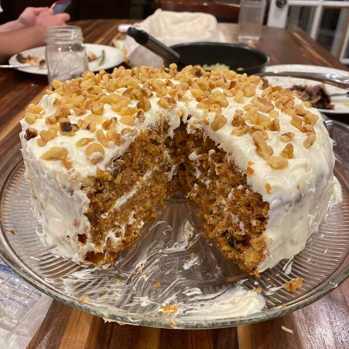

Sam's Famous Carrot Cake

Description
My grandfather, Sam, was famous for this cake. Everyone who knew him, knows of his famous carrot cake. He would always have some available for anyone who wanted it.
We miss him, but his carrot cake legacy will always live on. Enjoy!
Ingredients
- 3 Eggs
- 3/4 Cup Buttermilk
- 3/4 Cup Vegetable Oil
- 1 1/2 Cups White Sugar
- 2 Teaspoons Vanilla Extract
- 2 Teaspoons Ground Cinnamon
- 1/4 Teaspoon Salt
- 2 Cups All-Purpose Flour
- 2 Teaspoons Baking Soda
- 2 Cups Shredded Carrots
- 1 Cup Coconut Flakes
- 1 Cup Chopped Walnuts
- 1 8-oz Can Crushed Pineapple with Juice
- 1 Cup Raisins
Steps
- Preheat oven to 350 degrees F (175 degrees C). Grease and flour an 8x12 inch pan.
- In a medium bowl, sift together flour, baking soda, salt, and cinnamon. Set aside.
- In a large bowl, combine eggs, buttermilk, oil, sugar and vanilla. Mix well. Add flour mixture and mix well.
- In a medium bowl, combine shredded carrots, coconut, walnuts, pineapple, and raisins.
- Using a large wooden spoon or a very heavy whisk, add carrot mixture to batter and fold in well.
- Pour into prepared 8x12 inch pan, and bake at 350 degrees F (175 degrees C) for 1 hour. Check with toothpick.
- Allow to cool for at least 20 minutes before serving.